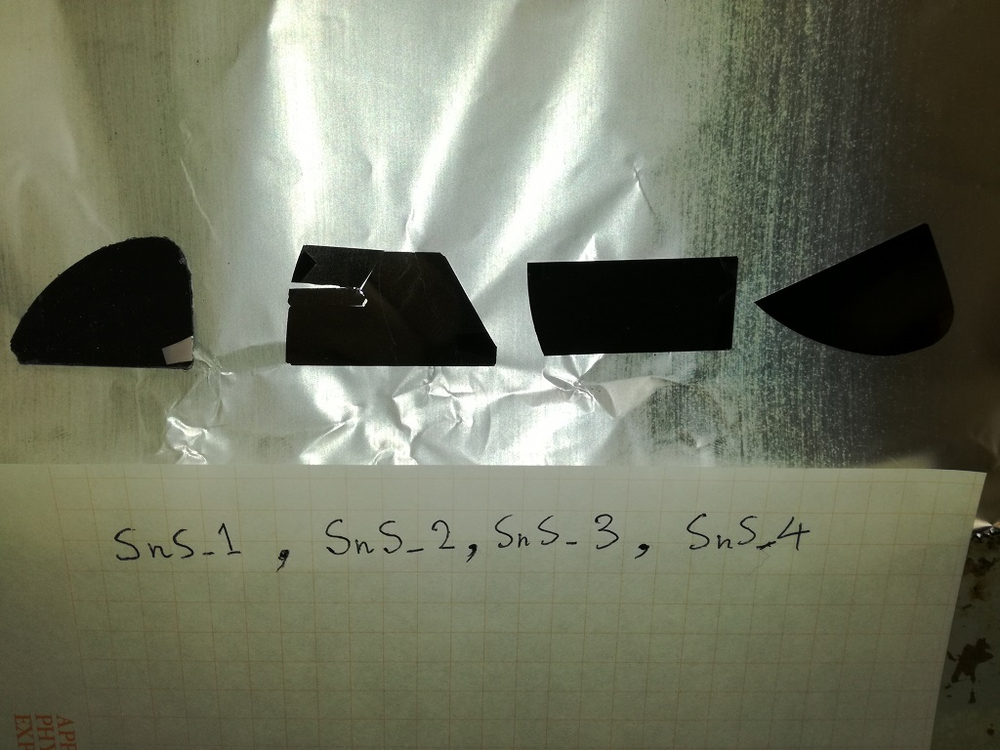

硫化すずの研究についての紹介です。
硫化すずは真っ黒な半導体で光を吸収する特性に優れているため，太陽電池の光吸収材料として注目されています。 理論上は２５％から３０％のエネルギー変換効率があるはずなのですが，いまだに世界のトップデータでもエネルギー変換効率は４％程度しかありません。 その理由は何なのか？ 原因を取り除くことはできるのか？ を明らかにすることを目的に研究を行っています。

最初に試作した硫化すずの写真です。一番左の右下の銀色っぽい部分が基板の色です。 上についている膜が真っ黒なことがわかります。 膜を作る条件を最適化することで，X線回折とラマン散乱分光の両方で混ざりものの無い純粋な硫化すずができました。 ２枚目が破れているのは作製後に基板ホルダから取り外す時のミスのせい。
−使用する実験装置の紹介−
分子線エピタキシー装置（という名の真空蒸着装置）

高真空の成長炉の中で、硫化すず薄膜を作るための装置です。
ロードロック室があり、成長炉を高真空に保ったまま、試料の出し入れができます。
目的とする物質の原料を加熱蒸発させ、土台となる半導体結晶基板上に蒸着します。
真空度が非常に高いため、蒸発した原料は、ビーム状になり基板に向かって飛んで行くため、分子線と名前がついています。
残念ながら科研費や助成金があたらなすぎて，真空度を上げるための液体窒素が買えず，やむなく超高真空とは言えないただの高真空で使っています。
超高真空ではないので，分子線を形成できているとは思えません。。。
電気炉

薬品や試料を加熱するために用います。最高で900度まで加熱することができます。粉末やゾルゲル膜を焼結するために利用しています。
上の電気炉は、元々On/Off制御だったものをPID制御できるように、温度調整器を交換しました。
また、リレーも機械式からソリッドステートリレーに変更しました。
金スパッタ装置
画像準備中
硫化すず薄膜の電気特性を測定する時に，金の電極を形成するために使用します。
真空蒸着装置


高真空中で、金属原料を載せたタングステン・ボートやモリブデン・ボートに数十アンペアの電流を流し、発生したジュール熱で金属を気化させます。
気化した金属は、真上に備えたシリコンなどの基板に蒸着され，金属の薄い膜（100nm～1μm）が作製されます。
また、1000℃近くで昇華する物質であれば、酸化亜鉛のような酸化物の膜も作れます。
高真空は油回転ポンプと油拡散ポンプの２つで作ります。
真空蒸着だけでなく真空中熱処理などにも利用できます。
主な使用用途は次のとおりです。
● 半導体への電極形成（アルミニウム電極など）
● 太陽電池材料である硫化すずを作るためのすず薄膜の作製(2016年)
● 透明n型半導体である酸化亜鉛薄膜の作製(2016年)
改造履歴
● 基板ヒーターの取り付けた（2016年6月)
● 基板の位置を5 cmと10 cmの2つを選択できるようにした（2016年11月)
● 基板ヒーターに熱電対を取り付け、温度のモニタリングができるようにした（2016年11月)
大気中で温度を計測して、所定の温度になる電圧を調べたところ、真空中に入れると100℃も違うことがわかりました。
薄膜の抵抗率測定装置

半導体薄膜や金属薄膜の抵抗率を測定する方法のひとつにVan der Pauw法があります。 薄膜試料の四隅に電極を設け、２端子に電流源、対面の２端子に電圧計を設けシート抵抗を測定します。 これを計８パターンおこなう。これらのシート抵抗値と膜厚から抵抗率を算出します。 また、針を当てる四探針法も用いることができます。 この装置はUSBでパソコンとつながっており、半自動で抵抗率を測定できます。 自作したもので、PIC、リレー、計装アンプでできています。 パソコン側の測定プログラムはVisual Basic2008で作成しました。
低温ホール効果測定システム

キャリア型、キャリア濃度、移動度の評価にはホール効果測定ができます。
電磁石により最大1Tを半導体試料に印加できる。また冷凍機により10K－300Kの温度制御が可能。
サンプルの微細な構造を観察するために、光ではなく電子線を用いる走査型電子顕微鏡や原子間力顕微鏡で、表面や断面の構造を観察します。

作製した試料を保管する容器です。半導体や金属の劣化を防ぐために中は真空になっています。複数台所有。
蛍光灯の光でキャリアの数が変化している？

作製した半導体薄膜に電極を付けて，電気抵抗を測定した例
部屋の蛍光灯をオン・オフすると，電気抵抗値が上がったり下がったり。そもそも徐々に抵抗値が上がっていることも問題なのですが。基本的に半導体の電気特性を測る時は暗闇が一番だと思います。
半導体薄膜の電気特性の温度依存性を測る時，温度コントローラの表示値は安定していても，試料がその温度で安定しているとは限らない？

温度を変えてホール効果測定をすると，何度やっても値が変化することがあります。しばらく待つと安定するけれど，いつまで待てばいいのか．．．。
上の例だと２０分待てば安定してます。これでも長いけれど，もっと長いなら，装置から取り出すのは面倒だけれど，一度開けて，試料と試料台の接触を見直すといいかもしれません。
(C) 2014- 釧路工業高等専門学校 創造工学科 エレクトロニクスコース 機能材料研究室. All rights reserved.